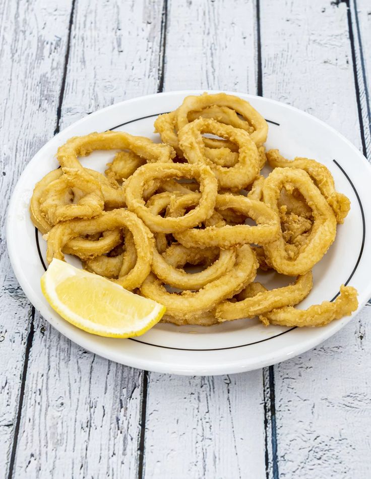

Rabas

Contenido nutricional de una ración de rabas:
Calorías
Grasas
Proteínas
Carbohidratos
Aproximadamente 175-240 kcal por porción
Entre 4.9 g y 11.0 g.
Entre 6 g y 12 g.
Entre 9.7g 23.8 g.
Ingredientes :
Calamares frescos
Harina
Huevo
Aceite de oliva